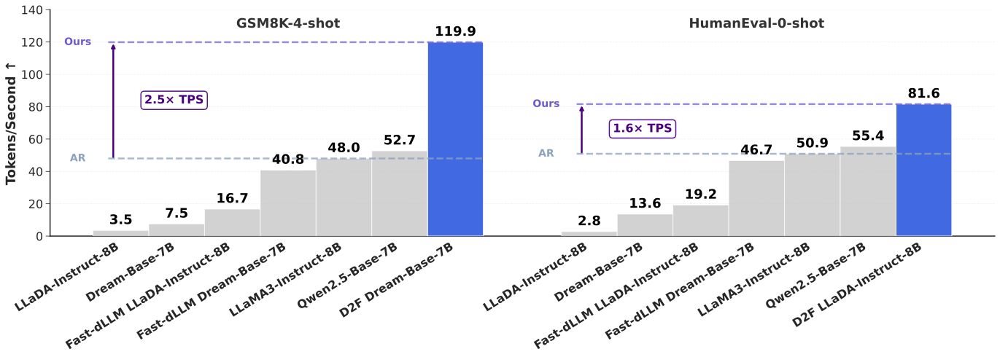
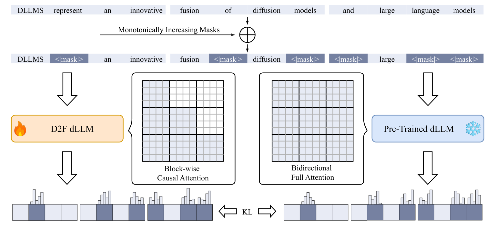
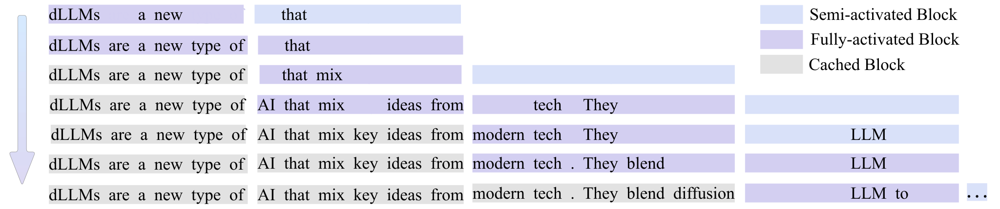
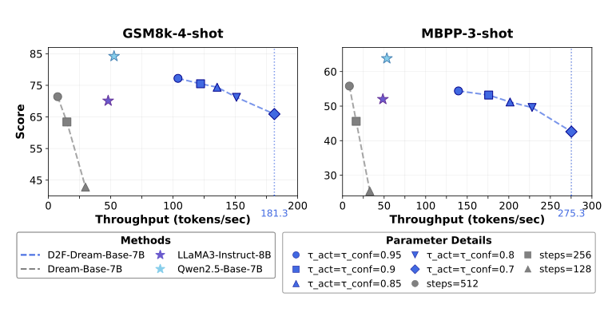
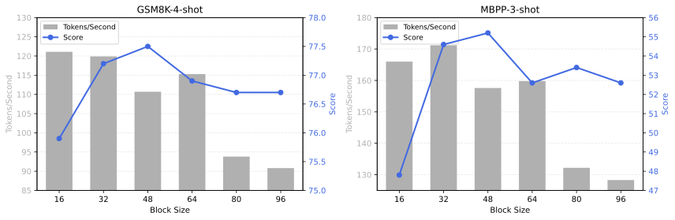

离散扩散强制（D2F）：让扩散语言模型的推理快过自回归模型
Diffusion LLMs Can Do Faster-Than-AR Inference via Discrete Diffusion Forcing
GitHub star 为 2026-10-20 的快照。阅读状态、进度与收藏只保存在你的浏览器里。
逐节精读
这部分按论文的章节顺序，用本站自己的话把整篇论文从头讲一遍。读懂某个概念需要的背景知识，会在第一次用到它之前单独讲清楚（青色框）。每个结论都尽量说出“因为什么、所以什么”。标“推算”的数字是本站根据论文数据算出来的，标“读自原图”的数字是从原文图中读出的约值，都不是论文原话。本页依据 arXiv v1（2025-08-08，目前唯一的 arXiv 版本），并对照了官方代码。原文以 CC BY 4.0 许可发布，所以本页直接使用了论文的原图（未做修改），原图没画到的地方用本站自己的示意图补上。每节末尾有英文原文的链接。
0 导读：这篇论文解决什么问题
扩散语言模型（diffusion LLM，下文简称 dLLM）是自回归（AR）模型之外的另一种生成文字的方式：它先在答案的位置放一排被遮住的“空格”（[MASK]），然后一轮一轮地让模型去猜，每一轮把其中一部分空格填上。因为一轮可以同时填好几个位置，人们自然期待它比一个 token 一个 token 往外吐的 AR 模型更快。闭源产品确实报出过很快的数字，但开源的 LLaDA、Dream 实际跑起来往往比同样大小的 AR 模型还慢。论文认为原因有两个：一是它们用双向注意力，每填进一个词，所有位置的中间结果都会跟着变，所以没法像 AR 模型那样把算过的 key/value 存起来复用（KV 缓存）；二是同一轮里一次填太多个位置会出错，所以实际每轮只能填很少几个。
此前的两条加速路线各缺一半。块扩散（BD3-LM）让模型一块一块地写，块与块之间是因果的，所以写完的块可以精确缓存；但它要求前一块完全写完，下一块才能开始，块与块之间无法并行。Fast-dLLM 不改模型，用近似的缓存加“只填有把握的位置”的并行解码，但近似缓存里存的是过时的结果，会带来误差。
D2F 想把两者的优点放在一起：既保留“块间因果”带来的精确 KV 缓存，又不让后面的块等前面的块写完。为此它把一个现成的双向 dLLM（LLaDA 或 Dream）改造成“块内双向、块间因果”的学生模型，只改注意力掩码，用 LoRA 微调。训练时，一条答案被切成若干块，越靠后的块被遮得越多；学生只能看见当前块和它前面的块，却要去模仿能看见全部块的原版双向模型（老师）给出的预测。这样学出来的学生有两个本领：已经写完的块，它的 key/value 不会再变，可以精确缓存；前一块还没写完时，它也能开始猜下一块。推理时，作者再设计了一个“流水线并行解码”算法，让几个块同时处于不同的完成度，一起往前推进。这个训练思路和连续扩散模型（主要是视频生成）里的 Diffusion Forcing 一脉相承，所以叫离散扩散强制（Discrete Diffusion Forcing）。
论文报告的主要结果是：只用 8 张 A100 蒸馏 12 小时，D2F-LLaDA 在 MBPP 上的吞吐量是原版 LLaDA 的 52.9 倍，分数 38.0 对 39.0；D2F-Dream 在 GSM8K 上每秒生成 119.9 个 token，是 LLaMA3-Instruct-8B（48.0）的 2.5 倍、Qwen2.5-Base-7B（52.7）的 2.3 倍，这就是标题里的“快过自回归”。读这两个数字时要记住几个条件：所有速度都是单条请求（batch 1）在一张 A100-PCIe-40GB 上测的；AR 基线用什么推理框架，论文没有写；“50 倍”的分母，是每一步只填 1 个位置、并且要把 512 个位置全部填完的原版 LLaDA。第 5 节的“结果的份量”会把这些条件一一拆开。
读完这部分，你应该能回答这几个问题：
- 为什么双向注意力的 dLLM 不能直接用 KV 缓存？块间因果为什么能让缓存变成“精确”的？
- 块扩散（BD3-LM）也能精确缓存，D2F 比它多了什么？为什么普通的 teacher forcing 训练不出这个本领？
- “非对称蒸馏”里，老师和学生各看到什么？为什么只改注意力掩码、用 LoRA 就够了？
- 流水线并行解码的三个阈值 \(\tau_{\text{add}}\)、\(\tau_{\text{act}}\)、\(\tau_{\text{conf}}\) 各管什么？“半激活”和“全激活”有什么区别？
- “比 LLaMA3 快 2.5 倍”和“比原版快 50 倍”分别是在什么条件下测出来的？换成和它同源的 Qwen2.5、换成优化过的推理引擎或更大的 batch，结论还成立吗？
1 引言：开源扩散语言模型为什么还没快过自回归模型
Transformer 每一层都要做注意力：每个位置算出一个 query，去和其他位置的 key 比相似度，再按相似度把它们的 value 加权平均。自回归模型用的是因果注意力：第 \(i\) 个位置只能看它自己和左边的位置。这带来一个很重要的性质：一个位置在每一层算出的 key 和 value，只取决于它左边的内容，右边后来生成什么都不会影响它。所以 AR 模型生成时可以把已经算过的 key/value 存起来（这就是 KV 缓存），每生成一个新 token，只需要为这一个新位置做计算，再读一遍缓存即可。KV 缓存的来龙去脉见 vLLM 精读 §2.2。
论文衡量速度用的是 TPS（tokens per second），即一段时间内生成的 token 数除以所用时间。要注意它测的是“一条请求自己生成得有多快”，和推理服务里常说的“一张 GPU 同时服务很多请求时的总吞吐量”不是一回事。AR 模型在只服务一条请求（batch 1）时，每一步只算 1 个 token，GPU 的算力大部分闲着；批变大以后，同样读一遍参数能为很多请求各算一个 token，总吞吐量会成倍上涨。所以“一条请求的 TPS 谁更高”和“满载的服务谁更划算”可能给出不同的答案。
这也解释了 dLLM 为什么“理论上”能在单条请求时赢过 AR 模型。batch 1 时，AR 模型每一步的时间主要花在把全部参数从显存读一遍上，只换来 1 个 token。dLLM 每一步同样要读一遍参数，但如果这一步能同时定下好几个 token，读参数的开销就被分摊了；而它每一步多算的那几十个位置，在 GPU 闲着的算力面前几乎是免费的。前提是两点：每一步的计算量不能太大（所以需要 KV 缓存，不能每步整段重算），每一步要真的能定下好几个 token（所以需要可靠的并行解码）。D2F 的两个本领正好对应这两个前提。
论文开篇先摆出期待和现实的落差。期待来自闭源模型：引言提到 Gemini Diffusion 和 Mercury 每秒能生成上千个 token，比同规模的 AR 模型快 5–10 倍（这是论文引用的厂商说法，不是本文实测）。现实是开源社区里还没有哪个 dLLM 在速度上赢过同规模的 AR 模型。
已有的加速工作分两类。第一类是设计 KV 缓存方案。其中块扩散（Block Diffusion，即 BD3-LM）把生成改成一块一块按顺序进行，块与块之间是因果的，于是写完的块可以缓存；但它要求一块完全写完，下一块才能开始，作者认为这放弃了“块与块之间并行”这个提速的关键因素。第二类是改进并行采样，其中 Fast-dLLM 也采用按块生成的顺序来复用已生成 token 的中间结果，并用“只揭开置信度高的位置”来并行解码；但它服务的模型是全双向的，后面的 token 一旦被填上，前面缓存下来的状态就不再准确了，论文称之为缓存“有偏”。
D2F 的出发点是同时要这两样东西：像块扩散那样一块一块地生成，好让 KV 缓存精确可用；但拒绝“后一块必须等前一块完全去噪”这条限制。作者指出，这种“AR 与扩散混合”的方式无法靠朴素的 teacher forcing 训练出来，因为 teacher forcing 训练时总是给模型完整的、正确的前文，模型从来没学过“前文还没写完时怎么往下猜”。这个问题在连续空间的扩散模型里已经有人解决过：Diffusion Forcing 让一个序列里不同位置的噪声水平各不相同，训练模型在前文还带噪时也能预测后文。D2F 就是把这个思路搬到离散的 token 上（第 4.1 节详细讲）。
具体做法是三件事。第一，训练学生模型同时去噪一串 token 块，块的掩码比例从前往后单调递增，这样推理时前面的块自然先完成，它们的 KV 就能缓存给后面的块用；为了保证缓存精确，注意力被限制为块间因果。第二，为了不从零训练，从现成的双向 dLLM 用一个“非对称”的蒸馏损失把学生蒸馏出来。第三，推理时用流水线并行解码，在速度和质量之间提供一个可调的折中（原文图 2）。
实验上，作者在 Bespoke-Stratos-17k 数据集上用 8 张 A100-PCIe-40GB 蒸馏 12 小时，就把 LLaDA-Instruct-8B 和 Dream-Base-7B 在 GSM8K、MATH、HumanEval、MBPP 上加速了 50 倍以上，平均分数基本不变；D2F-Dream 在 GSM8K 上比 LLaMA3-Instruct-8B 快 2.5 倍，在 HumanEval 上快 1.6 倍。作者据此称它是第一批比 AR 模型更快的开源 dLLM。

- 引言正文写的是“D2F-Dream-Base-7B 在 GSM8K 上快 2.5 倍、在 HumanEval 上快 1.6 倍”，但图 1 里 HumanEval 那根 81.6 的柱子标的是 D2F-LLaDA-Instruct-8B，数值也和表 1 中 D2F-LLaDA 的 HumanEval 吞吐一致；D2F-Dream 在 HumanEval 上的吞吐（表 2，最大长度 256）是 73.2。所以“HumanEval 上快 1.6 倍”实际说的是 D2F-LLaDA。
- 摘要说“比 LLaMA3 和 Qwen2.5 快 2.5 倍以上”，正文给出的是对 LLaMA3 2.5 倍（119.9 ÷ 48.0 ≈ 2.50）、对 Qwen2.5 2.3 倍（119.9 ÷ 52.7 ≈ 2.28，推算）。
- “比 AR 快”在本文里的准确含义是：单条请求、一张 A100、同一组少样本提示下，每秒生成的 token 数更多。它不等于“同样质量下更快”，也不等于“满载服务时更划算”。
2 相关工作：三条线索在这里交汇
扩散语言模型。长期以来，文字生成由 AR 模型主导，它们质量高，但一次只能出一个 token，延迟受这个串行过程限制。dLLM 的做法是从一整段被遮住的序列出发，反复去噪，每一轮都能同时预测所有被遮住的位置，并且用双向注意力同时看左右两边的上下文。论文点名了两个大规模开源 dLLM：从零训练的 LLaDA（LLaDA 精读），以及用 AR 模型 Qwen2.5-7B 的权重初始化、再继续训练的 Dream（Dream 精读）。它们在多个基准上和同规模的 AR 模型相当，D2F 的全部实验就建立在这两个模型上。
dLLM 的加速。论文把已有的加速方法归成两类。第一类是缓存类：标准 KV 缓存和双向注意力不兼容，于是 dLLM-Cache、Fast-dLLM、dKV-Cache 都设计了近似方案，复用序列中变化不大的那部分的计算结果。比如 dKV-Cache 的观察是一个 token 被定下来之后，它的 key/value 就趋于稳定，于是延迟一步再把它缓存起来（dKV-Cache 精读）。第二类是采样优化：靠置信度决定一步揭开几个位置（Fast-dLLM）、借助一个辅助的小模型引导并行采样，或者自适应地调整解码速度（SlowFast）。作者的判断是，这些方法要么有近似误差，要么要额外跑辅助模型，所以加速有限，通常追不上同规模的 AR 模型。D2F 的不同之处在于从根上改变生成结构：改成块间自回归的框架，让标准 KV 缓存直接可用，同时允许不等前一块写完就预测后面的块。
视频是一帧接一帧的，天然有先后顺序。近年的不少视频生成模型这样分工：帧与帧之间按时间顺序自回归地生成，后面的帧只看前面的帧，因此前面帧的中间结果可以像 KV 缓存那样存下来复用；每一帧（或每一段帧）内部，则用扩散模型从噪声开始逐步去噪。这样既保留了扩散模型的画面质量，又获得了自回归结构带来的缓存加速和“边生成边播放”的能力。论文列举的例子包括 CausVid（把一个双向的视频扩散模型蒸馏成因果的流式生成模型）、Self Forcing、AR-Diffusion，以及一个长时视频世界模型的工作。D2F 的“块”就相当于视频里的“帧”，后面第 4 节会看到，它的训练（从双向老师蒸馏出因果学生）和推理（多个块以不同噪声水平同时推进）都能在视频领域找到对应。
3 预备知识：掩码扩散语言模型，以及它慢在哪两处
目前最成功的 dLLM 大多是掩码扩散模型（详细推导见 MDLM 精读 与 LLaDA 精读 §2.1）。它的前向过程很简单：给定一条长度为 \(L\) 的原始文本 \(Y^{0}=\{y_{1}^{0},\dots,y_{L}^{0}\}\) 和一个“时间” \(t\in[0,1]\)，每个 token 独立地以概率 \(t\) 被换成 [MASK]，以概率 \(1-t\) 保持原样：
所以 \(t=1\) 时整段都是 [MASK]，\(t\) 越小留下的原文越多。模型 \(p_{\theta}(Y^{0}\mid Y^{t})\) 学的是反过来的事：看着一段部分被遮住的文本，同时预测出所有被遮位置的原文。生成时从全是 [MASK] 的 \(Y^{1}\) 出发，每一步让模型对所有被遮位置给出预测，揭开其中一部分，其余重新遮住，直到全部揭开。因为每一步都能同时预测所有位置，dLLM 在理论上有并行生成的潜力。
可是实际推理时有两处瓶颈。
第一处：双向注意力和 KV 缓存冲突。dLLM 每个位置都能看见所有其他位置。于是只要有一个位置从 [MASK] 变成了某个词，所有看得见它的位置（也就是全部位置）在第二层及以上的 key/value 都会跟着变。上一步算出的 key/value 到这一步就过期了，没法缓存，每一步都得把提示和整段答案从头算一遍，造成大量重复计算。下面的示意图对比了两种情况。
第二处：并行解码的条件独立假设。模型在一步里对每个被遮位置给出的是各自的“边缘”分布，并行揭开几个位置，相当于假设它们彼此独立地各取一个值。可是相互依赖的 token 常常不能这样取：比如“从 [M] [M] 出发”，模型可能觉得第一个空是“New”或“San”，第二个空是“York”或“Diego”，各自取最可能的值就可能拼出不存在的“New Diego”。为了保证质量，实际使用时往往要很多步、每步只揭开很少几个（详见 Fast-dLLM 精读 §2.3）。
已有的补救办法各管一头。块扩散（BD3-LM 精读）用按块的顺序生成换来精确 KV 缓存，Fast-dLLM、dLLM-Cache 用近似的 KV 缓存。作者认为它们都没能同时做到“精确的 KV 缓存”和“高效的并行解码”，所以开源 dLLM 一直没能在速度上追平 AR 模型。
4 方法：训练出一个能“提前开写”的块因果学生
4.1 离散扩散强制：块间单调递增的掩码率，加上块间因果的注意力
D2F 想让 dLLM 拥有两个本领：块级的自回归生成，这样标准 KV 缓存就能用，重复计算大大减少；块间并行解码，也就是让模型学会在前面的块还只完成了一部分时，就去预测后面的块，从而让每一步前向能定下更多 token。第一个本领 BD3-LM 已经有了，难点在第二个。
AR 模型训练时用的是 teacher forcing：预测第 \(i\) 个 token 时，喂给模型的前文永远是真实数据里正确、完整的前 \(i-1\) 个 token。块扩散（BD3-LM）把这个做法搬到块的层面：训练时，去噪第 \(i\) 块时它前面的块都是干净的原文，只有第 \(i\) 块本身被加了噪声。这样训练出来的模型只见过“前文完整”的情况，推理时也就只能等前一块完全写完、变成“干净的前文”之后，才开始下一块。如果在前一块还有一半是 [MASK] 时就让它去猜下一块，它面对的是训练中从未见过的输入，质量没有保证。
Diffusion Forcing（Chen 等，NeurIPS 2024）是为视频、机器人轨迹这类连续序列设计的训练方法。它的核心是：训练时给序列里的每个位置（比如每一帧）各自独立地抽一个噪声水平，用一个因果的网络去噪。这样模型学会了“前文本身也带着噪声时，怎么去噪后文”。推理时就可以让前面的帧噪声低、后面的帧噪声高，同时往前推进：前面的帧快去噪完时，后面的帧已经去噪到一半了，而不必等前一帧完全变干净。D2F 的作者说，他们的方法在概念上和 Diffusion Forcing 很像，都是“在带噪、不完整的前文条件下预测下一块”，可以看作 Diffusion Forcing 在离散序列上的推广，这也是名字的来历。
正式的定义。把一条干净序列 \(Y^{0}\) 切成 \(N\) 块，每块 \(k\) 个 token，第 \(i\) 块的位置集合记为 \(B_{i}\)，对应的子序列记为 \(Y_{B_{i}}\)。前向加噪时，D2F 给每一块各取一个掩码率，并且要求它们单调递增：\(t_{1}<t_{2}<\dots<t_{N}\)，第 \(i\) 块按 \(t_{i}\) 独立地遮住其中的 token。于是加噪后的序列里，越靠前的块越完整，越靠后的块越模糊。学生模型要学的反向过程是：
读这个式子时抓住条件里的两件事。第一，预测第 \(i\) 块时只用到第 1 到第 \(i\) 块，看不到后面的块，这就是“块间因果”。第二，条件里的前面各块都是带噪的 \(Y_{B_{j}}^{t_{j}}\)，而不是干净的 \(Y_{B_{j}}^{0}\)。正是第二点让模型学会了在前文没写完时就开始预测，这是 teacher forcing 学不到的。直观地说，训练好的模型在推理时可以一边把前面的块收尾，一边推进后面的块，块与块之间就能并行了。
注意力怎么改。为了实现块间因果，学生的注意力被限制成：块内部仍然是双向的，每个位置能看见本块所有位置；块与块之间是因果的，只能看见自己前面的块（和提示）。下图把两种掩码画成矩阵对比。
为什么这样一改，缓存就“精确”了。在块因果注意力下，第 \(i\) 块里每个位置在每一层的 key/value，只取决于提示、第 1 到第 \(i\) 块的内容。一旦第 \(i\) 块的所有 token 都定下来，而它前面的块也都已经定下来，那么这一块的 key/value 就再也不会变：后面的块无论怎么变，它都看不见。于是把它算一次存起来，和以后每一步都重新算一遍，得到的结果完全一样。这就是论文说的“精确复用”。对比一下 Fast-dLLM：它服务的模型是全双向的，块外的 key/value 理论上每一步都会变，缓存只是“假装不变”，所以是近似。
- “精确缓存”说的是：对 D2F 学生这个模型本身，用缓存和不用缓存算出来的结果相同。它不是说学生的输出和原版双向模型一样。学生本来就看不到后面的块，比老师少了一部分信息，这部分损失要靠下一节的蒸馏来弥补，最后体现在分数上。
- 式 (2) 写成连乘的样子，但它不是对干净文本 \(Y^{0}\) 的似然分解：条件里放的是带噪的前文，不是干净的前文。它描述的是训练时要学会的一组条件预测。论文没有报告学生模型的似然或 ELBO，所以不能拿它和 AR 模型比困惑度。
- 论文说 BD3-LM 用的是“朴素的 teacher forcing”。更准确地说，BD3-LM 训练时当前块本身是加噪的，只是前面的块是干净的；D2F 多出来的是“前面的块也带噪，而且噪声越往前越小”这一点。
4.2 非对称蒸馏：让只看前文的学生模仿看全文的老师
从零训练一个几十亿参数的 dLLM 非常昂贵（LLaDA 预训练用了 2.3T token），所以作者选择从开源社区现成的双向 dLLM 蒸馏出 D2F 学生。
知识蒸馏是让一个“学生”模型去模仿一个已经训练好的“老师”模型的输出，而不是直接去拟合数据里的标准答案。老师给出的是一整个概率分布，比如“这个空填 5 的可能性 70%，填 6 的可能性 20%……”，它比一个“正确答案是 5”的标签包含更多信息。
衡量两个分布有多接近的常用指标是 KL 散度 \(D_{\text{KL}}(p\,\|\,q)=\sum_{v}p(v)\log\frac{p(v)}{q(v)}\)。它总是大于等于 0，两个分布完全相同时等于 0。它不对称：把 \(p\)、\(q\) 换个位置，数值和优化行为都不同。
LoRA（低秩适配）是一种省钱的微调方法：原模型的权重全部冻住，只在指定的矩阵旁边加一对很瘦的矩阵 \(A\in\mathbb{R}^{d\times r}\)、\(B\in\mathbb{R}^{r\times d}\)，用 \(W+BA\) 代替 \(W\)，只训练 \(A\) 和 \(B\)。秩 \(r\) 远小于 \(d\)，所以要训练的参数很少；把这对矩阵关掉，模型就变回原样。
设 \(p_{\phi^{-}}\) 是原版的双向 dLLM（老师），\(p_{\theta}\) 是 D2F 学生，学生的参数 \(\theta\) 用老师的参数 \(\phi^{-}\) 初始化。蒸馏要最小化的损失是：
其中 KL 散度只在被遮住的位置上累加。“非对称”指的是两边看到的东西不一样：同一条加噪序列，老师用双向注意力看到全部 \(N\) 块（全局视野），学生只能看到第 1 到第 \(i\) 块（因果视野），却要给出和老师尽量一样的预测。这样，现有 dLLM “填空”的能力就被搬进了块因果结构的学生里。模型结构上，学生和老师唯一的区别就是注意力掩码：一个是块因果，一个是双向。

算法 1 逐行走一遍。每一轮训练：(1) 从数据集里取一条序列；(2) 把它切成 \(N\) 块，每块 \(k\) 个 token；(3) 抽一组单调递增的掩码率 \(t_{1}<\dots<t_{N}\)；(4) 按式 (1) 用 \(t_{i}\) 给第 \(i\) 块加噪；(5) 老师用全局视野、学生用因果视野，分别对每一块的被遮位置给出预测分布；(6) 用式 (3) 的损失更新学生。论文还指出，这个目标和视频领域的 CausVid 有联系：CausVid 也是把一个“整体生成”的双向视频扩散模型蒸馏成流式生成的因果模型。
为什么只改注意力掩码、用 LoRA 微调就够了？因为学生的任务和老师非常接近：都是“看着部分被遮的文本，猜被遮的词”，区别只在于学生看不到后面的块。老师已经掌握了绝大部分填空能力，学生只需要学会在少一部分信息的情况下给出相近的答案，这是一个小幅度的调整，适合用参数量很小的 LoRA 来做。
- 老师就是“关掉 LoRA 的学生”。代码里不单独加载老师：同一个模型在
disable_adapter()下、配一张全零（即全可见）的注意力掩码算出老师的分布，再在 LoRA 打开、块因果掩码下算学生的分布。所以老师严格等于原版模型，显存里只需要一份权重。 - KL 的方向。式 (3) 写的是 \(D_{\text{KL}}(p_{\theta}\,\|\,p_{\phi^{-}})\)（学生在前）。代码用的是“以老师的概率为软标签、对学生的 logits 做交叉熵”，即 \(-\sum_{v}p_{\phi^{-}}(v)\log p_{\theta}(v)=D_{\text{KL}}(p_{\phi^{-}}\,\|\,p_{\theta})+H(p_{\phi^{-}})\)。老师的熵 \(H\) 不依赖 \(\theta\)，所以代码实际优化的是老师在前的 KL，和式 (3) 方向相反。两个方向的行为不同：老师在前时，老师认为可能的词，学生给的概率太低就会被重罚，学生倾向于把概率摊开、覆盖老师的每个选项；学生在前时，学生把概率放到老师认为不可能的词上会被重罚，学生倾向于集中到老师的主要选项上。在老师本身很有把握（分布很尖）的位置上，两者差别不大；论文没有比较两种方向。
- 额外的 1/t 加权。代码把每个被遮位置的交叉熵再除以该块的掩码率，再在所有被遮位置上取平均。这和掩码扩散 ELBO 里的 \(1/t\) 权重同形，式 (3) 没有写。
- 掩码率的取法。论文说最小 0.3、最大 0.7。代码里第一块的掩码率在 [0.2, 0.7) 里均匀抽取，后面各块在它的基础上随机累加增量，最大不超过 0.7，是单调不减而不是严格递增。
- 答案之后的填充。训练数据在答案后面补满结束符（EOS），这些位置也参与加噪和训练，所以学生也学会了在答案结束后预测 EOS。公开的配置文件中序列长度写的是 1024，Dream 的学习率是 5e-6，与论文的 512、1e-5 不同，可能是发布时的配置和论文实验不一致。
4.3 流水线并行解码：让几个块同时处于不同的完成度
dLLM 每一步对每个被遮位置给出一个词分布，分布里最大的那个概率叫这个位置的置信度。Fast-dLLM 提出的规则是：只揭开置信度超过阈值 \(\tau\)（例如 0.9）的位置，其他位置继续遮着；如果一个都没超过，至少揭开置信度最高的那一个，保证每一步都有进展。这样，模型有把握的地方一步能定好几个，没把握的地方就慢下来一个一个定（详见 Fast-dLLM 精读 §4.1）。下面的小演示用一个概率完全已知的玩具例子展示这条规则：调大或调小 \(\tau\)，看每步揭开几个、拼错的概率怎么变。
有了能在“前文没写完”时预测后文的学生，推理就可以这样组织。算法维护一个活动块的滑动窗口：
- 什么时候加新块（\(\tau_{\text{add}}\)）。一开始只有一个全是 [MASK] 的块。每当窗口里最后一块已定稿的比例超过 \(\tau_{\text{add}}\)，并且目前还没有生成结束符，就在末尾追加一个新的全 [MASK] 块。作者强调这种按需追加的做法比一开始就摆出一整排很长的块便宜得多，因为每一步前向只需要算窗口里的块。
- 新块先“半激活”（\(\tau_{\text{conf}}\)）。作者观察到，刚加进来的块如果马上激进地解码，质量会下降：它前面那块还有很多空没填，它能依据的上下文太少。所以新块先处于半激活状态，只揭开置信度超过 \(\tau_{\text{conf}}\) 的位置；如果一个都没超过，这一步就一个也不揭开。
- 前一块够完整了再“全激活”（\(\tau_{\text{act}}\)）。当一个块的前一块已定稿的比例超过 \(\tau_{\text{act}}\) 时，说明它已经积累了足够的上下文，它转为全激活：同样揭开所有置信度超过 \(\tau_{\text{conf}}\) 的位置，但如果一个都没超过，就强制揭开置信度最高的那一个。也就是说，两种状态的区别只在于“有没有每步至少一个”的保底。
- 写完的块进缓存。一个块的位置全部定稿后，它的 key/value 被写入 KV 缓存，此后的每一步都只读不算。
论文默认的阈值是 \(\tau_{\text{conf}}=0.9\)、\(\tau_{\text{add}}=0.1\)、\(\tau_{\text{act}}=0.95\)。也就是说，最后一块只要定下 10% 就追加新块；新块要等前一块定下 95% 才全速推进。

把“按块串行”和“流水线”放在一起看，区别就清楚了。下图是本站编的示意：假设每块都需要 3 步全速解码才能写完。
| 1 | 2 | 3 | 4 | 5 | 6 | 7 | 8 | 9 | 10 | 11 | 12 | |
|---|---|---|---|---|---|---|---|---|---|---|---|---|
| ① 按块串行：块 \(i\) 写完，块 \(i+1\) 才开始（BD3-LM，或 D2F 的“只开缓存”消融） | ||||||||||||
| 块 1 | ||||||||||||
| 块 2 | ||||||||||||
| 块 3 | ||||||||||||
| 块 4 | ||||||||||||
| ② D2F 流水线：最后一块定下一部分就追加新块，新块先半激活 | ||||||||||||
| 块 1 | ||||||||||||
| 块 2 | ||||||||||||
| 块 3 | ||||||||||||
| 块 4 | ||||||||||||
算法 2 逐行走一遍。输入是 D2F 模型和三个阈值。初始化时序列里只有一个全 [MASK] 的块。之后循环直到生成结束：(4–5) 如果最后一块已定稿的比例超过 \(\tau_{\text{add}}\) 并且序列里还没有结束符，就追加一个半激活的新块；(6) 用已缓存的 KV 对序列做一次前向；(7–11) 对窗口里的每个活动块，找出置信度超过 \(\tau_{\text{conf}}\) 的位置集合 \(J_{i}\)，如果这个块是全激活的而 \(J_{i}\) 为空，就把置信度最高的位置加进去，然后揭开 \(J_{i}\) 里的位置，其余位置保持遮住；(12–13) 如果某块的前一块已定稿比例超过 \(\tau_{\text{act}}\)，就把它设为全激活；(14) 把已经完成的块写进 KV 缓存。
读官方评测代码（D2F-eval）还能补上几个论文没写的细节。第一，一块写完后，它的 KV 是在下一次前向里写入缓存的：那次前向会把这块（此时已全部定稿）和窗口里其余的活动块一起算一遍，顺便把这块的 key/value 存下来。第二，一块要等它前面的块都写完，才会被标记为可以缓存，所以缓存永远是从左到右连续的一段。第三，每一步的前向输入从“最早一个还没缓存的块”开始一直到序列末尾，长度通常就是两三个块；提示部分在第一次前向时就整段缓存了。第四，一旦某一步揭开的位置里出现了结束符，就不再追加新块，已在窗口里的块写完即停。这最后一点后面会很重要：原版 dLLM 要把预先设好的整段长度全部填完，D2F 则在答案结束后很快停下。第五，Dream 是用 AR 模型初始化的，保留了“第 \(i\) 个位置的输出预测第 \(i+1\) 个 token”的约定（见 Dream 精读 §4.1），所以代码对 Dream 要把输出右移一位；每一块第一个位置的预测，来自它左边那个位置，也就是缓存里最后一个位置留下的输出。块因果掩码和这个移位是兼容的，因为左边那个位置总在当前块或更前面的块里。
算一笔账（推算）。以 GSM8K 为例，LLaDA 论文报告它的评测提示平均约 894 个 token（见 LLaDA 精读），设生成长度 256。原版 LLaDA 每一步都要把提示和整段画布约 1,150 个位置全部过一遍网络，256 步合计约 29 万个位置次。D2F 在第一次前向时把提示整段算完存进缓存，之后每一步只过窗口里的两三个块：块长 32 时约 64–96 个位置，块长 64 时约 128–192 个位置，再加上读取缓存的注意力开销。所以单步计算量下降了一个数量级左右；再加上一步能定稿好几个 token、答案写完就停，总耗时就降下来了。这只是量级估算，论文没有报告每条样本的前向次数（NFE）。
论文最后提到，“动态块管理 + 双状态”这两个设计合在一起，既让每一步的计算量小，又保留了块间并行；它和视频生成里 MAGI-1 的做法在概念上相似，后者也让若干段视频以不同的噪声水平同时向前推进。
- 代码里三个阈值的名字和论文不同：
block_add_threshold是 \(\tau_{\text{add}}\)，decoded_token_threshold是 \(\tau_{\text{act}}\)，skip_threshold是 \(\tau_{\text{conf}}\)。 - 当 \(\tau_{\text{add}}=\tau_{\text{act}}\) 时，新块要等前一块完成到 \(\tau_{\text{act}}\) 才被追加，追加时前一块已经够完整，新块一进来就是全激活，“半激活”状态实际上不存在，论文称之为单状态流水线（见第 5.5 节表 3）。
- 推理时的块长可以和训练时不同。训练用 16，推理按基准用 32、48 或 64（附录表 8），只要是 16 的整数倍（图 5 测了 16–96）。
4.4 放在一起看：几种让 dLLM 用上缓存的做法
论文没有这样一张表，下面是本站把第 2–4 节涉及的方法按同样几个问题排在一起，方便看清 D2F 到底多做了什么、付出了什么。
| 原版 LLaDA / Dream | Fast-dLLM | dKV-Cache | BD3-LM（块扩散） | D2F | |
|---|---|---|---|---|---|
| 要不要训练 | — | 不用 | 不用 | 按块扩散目标训练 | 从双向模型蒸馏（LoRA，12 小时 × 8 卡） |
| 注意力 | 全双向 | 全双向 | 全双向 | 块内双向、块间因果 | 块内双向、块间因果 |
| KV 缓存 | 无，每步整段重算 | 近似：写当前块时假装块外不变，块写完刷新 | 近似：已定稿的 token 延迟一步缓存，定期刷新 | 精确 | 精确 |
| 块与块之间能否并行 | —（整段一起去噪） | 不能，块按顺序写 | — | 不能，前块写完才写后块 | 能，后块在前块写到 \(\tau_{\text{add}}\) 时就开始 |
| 一步定稿几个 | 通常 1 个 | 置信度超过阈值的全部 | 沿用原采样器 | 由采样步数决定 | 每个活动块各自按阈值定稿 |
| 答案写完能否提前停 | 不能，要填满设定长度 | 逐块写满设定长度（结束符通常置信度高，填得较快） | — | 能（变长生成） | 能，见到结束符不再加块 |
这张表也说明了 D2F 的代价：它不是即插即用的推理技巧，每个要加速的模型都得先蒸馏一个学生；学生看不到后面的块，理论上比原版少了一部分“往后看”的能力，好在第 5 节的分数显示这在数学和代码任务上损失不大。表中 Fast-dLLM、dKV-Cache 的细节见 Fast-dLLM 精读 §3 和 dKV-Cache 精读。
5 实验：快了多少，和谁比，掉了多少
5.1 实验是怎么设的
模型。两个开源 dLLM：LLaDA-Instruct-8B（从零训练、做过 SFT 的指令模型）和 Dream-Base-7B（用 Qwen2.5-7B 初始化、没做指令微调的基础模型）。蒸馏后的模型分别叫 D2F-LLaDA 和 D2F-Dream。
蒸馏数据。用的是 Bespoke-Stratos-17k 的题目，但答案不是原数据集里的：作者使用了 Hugging Face 上第三方整理好的两个子集，其中的回答是第三方用 Qwen2.5-7B 重新生成的，并已过滤到 600 个 token 以内。按数据集主页的说明，Bespoke-Stratos-17k 的题目大约 5k 道来自编程题（APPs、TACO），10k 道来自数学题（AIME、MATH、Olympiads），另有约 1k 道科学与谜题。也就是说，蒸馏数据和后面评测的数学、代码基准属于同一类任务。论文没有给出过滤后实际用了多少条样本。
训练。对学生的 q/k/v/o 四个投影矩阵加 LoRA，秩 32、缩放 32、dropout 0.1；序列截断或补齐到 512 个 token；训练块长 16；块的掩码率在 0.3 到 0.7 之间单调递增（这个区间受 BD3-LM 的“裁剪”噪声调度启发，见 BD3-LM 精读 §6.2）；AdamW，恒定学习率 \(10^{-5}\)，训练 12 小时。训练和推理都在 8 张 A100-PCIe-40GB 上进行。
速度怎么测。论文报告三项：TPS（每秒生成的 token 数）、延迟（每条样本平均耗时，秒）和生成长度（每条样本平均生成的 token 数）。读官方评测脚本可知，评测是 8 个进程、每张 GPU 一个进程做数据并行，每个进程的 batch size 是 1，即每张卡一次只处理一条样本；TPS = 这个进程生成的 token 总数 ÷ 总耗时。所以论文里的 TPS 是“一张 A100 处理单条请求”的速度，不是 8 张卡的合计。两份脚本数“生成的 token”的方法不一样：LLaDA 的脚本先把回答按少样本提示的停止串截断，再数剩下的 token，只算真正的答案；Dream 的脚本数的是整块画布上所有不是结束符的 token，不做截断。原版模型和 Fast-dLLM 这些基线是否用同样的数法，论文没有说明。另外，官方 LLaDA 脚本里 MATH 写的是 0-shot，而表 1 标的是 4-shot。本站核对过：表中“延迟 × TPS”基本等于生成长度（例如 LLaDA 原版 GSM8K：32.3 秒 × 7.2 ≈ 233，表中长度 231，推算），三列是自洽的。
基线的设置。原版模型、dLLM-Cache 和 Fast-dLLM 都沿用各自原论文的采样配置；D2F 用自己的配置。附录表 8 把它们列了出来，本站整理如下。
| 模型 · 基准 | 基线：长度 / 块长 | D2F：最大长度 / 块长 | D2F：\(\tau_{\text{add}}\) / \(\tau_{\text{act}}\) / \(\tau_{\text{conf}}\) |
|---|---|---|---|
| LLaDA · GSM8K | 256 / 8 | 512 / 64 | 0.7 / 0.95 / 0.9 |
| LLaDA · MBPP | 512 / 32 | 512 / 32 | 0.9 / 0.95 / 0.9 |
| LLaDA · HumanEval | 512 / 32 | 512 / 32 | 0.1 / 0.95 / 0.9 |
| LLaDA · MATH | 256 / 256 | 512 / 32 | 0.1 / 0.95 / 0.9 |
| Dream · GSM8K-CoT | 256 / – | 256 / 32 | 0.1 / 0.95 / 0.9 |
| Dream · MBPP | 256 / – | 256 / 48 | 0.1 / 0.95 / 0.9 |
| Dream · HumanEval | 256 / – | 256 / 32 | 0.9 / 0.95 / 0.95 |
| Dream · MATH | 256 / – | 256 / 64 | 0.1 / 0.95 / 0.9 |
这张表有两个要点。第一，在 LLaDA 上，D2F 的最大长度一律是 512，而原版在 GSM8K 和 MATH 上用的是 256，两边允许生成的长度不同。论文的解释是：D2F 是按块往后长的，“最大长度”只是一个上限，遇到结束符就停，不影响采样分布。第二，在 Dream 上，所有方法的长度都统一为 256，因为 Dream-Base 是基础模型，常常不会正确地生成结束符，长度设得太大就会一直写下去；这个做法沿用了 dLLM-Cache 论文的设置。另外，D2F 在不同基准上用了不同的块长和阈值，这些超参是按基准分别选的。
5.2 在 LLaDA 上：原文表 1
| 基准 | 原版 LLaDA：TPS / 延迟 / 长度 / 分数 | Fast-dLLM 双缓存 | D2F-LLaDA |
|---|---|---|---|
| GSM8K 4-shot | 7.2 / 32.3 s / 231 / 77.4 | 35.2 / 6.6 s / 232 / 78.9 | 52.5（7.3×）/ 2.8 s（11.5×）/ 144 / 77.3 |
| MBPP 3-shot | 0.9 / 71.4 s / 65 / 39.0 | 15.3 / 3.8 s / 58 / 36.4 | 47.6（52.9×）/ 1.4 s（51.0×）/ 68 / 38.0 |
| HumanEval 0-shot | 2.8 / 38.8 s / 107 / 36.0 | 19.2 / 5.2 s / 100 / 35.4 | 81.6（29.1×）/ 1.6 s（24.3×）/ 133 / 40.2 |
| MATH 4-shot | 21.1 / 11.5 s / 243 / 23.7 | 42.5 / 5.8 s / 246 / 22.4 | 90.2（4.3×）/ 4.3 s（2.7×）/ 384 / 29.1 |
表 1 的数字取自原文；本站这张表里 Fast-dLLM 只列了双缓存（Dual-Cache）版本，前缀缓存（Prefix-Cache）版本在 MATH 上更快（47.7 TPS），dLLM-Cache 的结果介于原版和 Fast-dLLM 之间，见原表。论文的结论是 D2F 在四个基准上都最快，平均分数和原版相当：MBPP 上 47.6 对 0.9 token/秒（52.9 倍），分数 38.0 对 39.0；MATH 上 90.2 token/秒，是 Fast-dLLM 双缓存（42.5）的 2.1 倍。
附录表 5 把 D2F 的加速拆成了两段：“只开缓存”（块因果注意力 + 标准 KV 缓存，但一块写完再写下一块）和“缓存 + 流水线”（完整的 D2F）。下图用每条样本的平均延迟画出这三档。
这张图说明了 52.9 倍是怎么来的。MBPP 上原版每条样本要 71.4 秒，却平均只生成了 65 个有效 token：原版的设置是长度 512、每步揭开 1 个，所以它要跑满 512 步，而 512 个位置里只有约 13% 是答案，其余都是答案后面的结束符（65 ÷ 512 ≈ 12.7%，推算）。D2F 遇到结束符就停，只写了两三个块。于是“只开缓存”这一档就已经快了 18.8 倍（延迟），流水线在此基础上再快约 2.7 倍（3.8 → 1.4 秒，推算）。换句话说，52.9 倍里的大头来自“不再给答案后面的填充位置一步步解码”和 KV 缓存，块间流水线贡献的是后面那 2–3 倍。
MATH 是另一种情况。原版用 256 的长度、一块到底（块长 256），D2F 允许写到 512。结果 D2F 平均写了 384 个 token，原版只写了 243 个。于是吞吐（TPS）快了 4.3 倍，但每条样本的延迟只快了 2.7 倍；“只开缓存”这一档的延迟（12.6 秒）甚至比原版（11.5 秒）还长。分数从 23.7 涨到 29.1，也很可能部分来自允许写得更长，而不全是方法本身的功劳：数学题的推导被截断在 256 个 token 时，答案就出不来。
和 Fast-dLLM 双缓存版本比，按延迟算 D2F-LLaDA 快 1.3–3.3 倍（GSM8K 6.6 → 2.8 秒，MBPP 3.8 → 1.4 秒，HumanEval 5.2 → 1.6 秒，MATH 5.8 → 4.3 秒，推算）；MATH 上 Fast-dLLM 前缀缓存版本更快（5.2 秒），D2F 只快约 1.2 倍。但要记住两者的条件不同：Fast-dLLM 不需要训练、直接用在原版模型上，并沿用原版的长度设置；D2F 需要 12 小时的 LoRA 蒸馏，并用了自己按基准挑选的块长与阈值。
5.3 在 Dream 上：原文表 2
| 基准（长度统一 256） | 原版 Dream：TPS / 分数 | Fast-dLLM 前缀缓存 / 双缓存 | D2F-Dream：TPS / 延迟 / 分数 |
|---|---|---|---|
| GSM8K-CoT 8-shot | 9.5 / 75.0 | 50.3 / 76.6 49.8 / 75.0 | 91.2（9.6×）/ 2.8 s / 77.6 |
| MBPP 3-shot | 10.4 / 56.2 | 71.6 / 56.4 73.2 / 51.0 | 105（10.1×）/ 2.3 s / 55.2 |
| HumanEval 0-shot | 20.2 / 54.3 | 62.4 / 54.3 60.0 / 53.0 | 73.2（3.6×）/ 3.1 s / 54.3 |
| MATH 4-shot | 9.9 / 35.8 | 65.6 / 37.6 67.0 / 37.1 | 98.8（10.0×）/ 2.6 s / 35.4 |
Dream 上所有方法的长度都是 256，而且 Dream-Base 很少主动写结束符，所以各方法的生成长度几乎都在 227–256 之间，比较起来比 LLaDA 干净得多：TPS 的倍数和延迟的倍数基本一致。D2F-Dream 相对原版快 3.6–10.1 倍；相对 Fast-dLLM 两个版本中较快的那个，快 1.17–1.8 倍（GSM8K-CoT 91.2 ÷ 50.3 ≈ 1.8，MBPP 105 ÷ 73.2 ≈ 1.43，HumanEval 73.2 ÷ 62.4 ≈ 1.17，MATH 98.8 ÷ 67.0 ≈ 1.47，推算）。论文正文写的是“比 Fast-dLLM（49.8）快 1.8 倍”，用的是双缓存版本的数字。分数方面，D2F-Dream 在 GSM8K-CoT 上高 2.6 分，HumanEval 持平，MBPP 和 MATH 分别低 1.0 和 0.4 分。
HumanEval 上的加速最小（3.6 倍）。一个直接的原因是原版 Dream 在 HumanEval 上本来就最快（20.2 token/秒，其他三项约 10），D2F 在这一项用的阈值也最保守（\(\tau_{\text{add}}=0.9\)、\(\tau_{\text{conf}}=0.95\)，见表 8）。
5.4 和 AR 模型比：原文图 1 与图 2
论文的 AR 基线是 LLaMA3-Instruct-8B 和 Qwen2.5-Base-7B，“为了公平”所有方法的最大生成长度都设为 512。在 GSM8K 上，D2F-Dream 达到 119.9 token/秒，是 LLaMA3（48.0）的 2.5 倍、Qwen2.5（52.7）的 2.3 倍。这个 119.9 和消融表 4 中 D2F-Dream 在 GSM8K 4-shot、块长 32、\(\tau_{\text{act}}=0.95\) 的那一行（119.9 token/秒，77.2 分）一致，所以可以对上它的分数。

图 2 里能读出的数字：GSM8K 上，D2F-Dream 在 150.9 token/秒时得 71.2 分（正文数字），作者据此说它以 3.1 倍于 LLaMA3 的吞吐超过了 LLaMA3 的 70.1 分；原版 Dream 把步数从 512 减到 128 时，分数从 71.4 掉到 42.8（正文数字），说明原版靠减步数提速代价极大。最快的一档 \(\tau=0.7\) 达到 181.3 token/秒（GSM8K）和 275.3 token/秒（MBPP），分数约 66 和 43（读自原图）。另一方面，Qwen2.5-Base-7B 的星在 GSM8K 上约 84 分、MBPP 上约 64 分（读自原图），而 D2F-Dream 的最高点分别约 77 和 54。
这一点值得单独说清楚，因为 Qwen2.5-Base-7B 是和 D2F-Dream 最“对等”的 AR 对手：Dream-Base-7B 本身就是用 Qwen2.5-7B 的权重初始化、再用 580B token 继续训练出来的（Dream 精读 §4.3），D2F-Dream 又是在 Dream 上加 LoRA 蒸馏得到的，三者的网络规模几乎一样。和它比，D2F-Dream 在 GSM8K 上快 2.3 倍，但分数低了约 7 分（读自原图）。所以“同等质量下快过 AR”这个说法，对 LLaMA3-Instruct-8B 成立，对自己的 AR 出发点 Qwen2.5 不成立。
速度条件方面，论文只写了“训练和推理都在 8 张 A100-PCIe-40GB 上进行”，官方 README 补充说速度测试在 A100-PCIe-40GB 上进行。D2F 一侧是单卡、batch 1（见 5.1）。AR 一侧用什么推理框架、batch 多大，论文和 README 都没有写。仓库里只有一个演示脚本把 D2F-LLaDA 和 LLaMA 并排比较，它用 Hugging Face Transformers 加载 Llama-3.1-8B-Instruct，在一个手写循环里一次生成一个 token；但没有证据表明论文图 1 的数字就是用这个脚本测的，而且它加载的是 LLaMA 3.1，论文写的是 LLaMA3。下面用一个简单的估算看看 48.0 token/秒处在什么水平。
AR 模型在 batch 1 时，每生成一个 token 都要把全部参数从显存读一遍，计算量很小，速度基本由显存带宽决定（详见 vLLM 精读 §1）。LLaMA3-8B 约 80 亿参数，用 bf16 存约 16.1 GB；A100-PCIe-40GB 的显存带宽是 1,555 GB/s（NVIDIA 规格）。所以每秒最多生成约 1555 ÷ 16.1 ≈ 97 个 token（推算，还没算读 KV 缓存的时间）。Qwen2.5-7B 约 76 亿参数，上限约 102 token/秒（推算）。
从这个估算可以读出两件事。第一，论文测得的 48.0 和 52.7 只有带宽上限的一半左右，这更像是没有经过专门优化的推理实现（例如 Hugging Face Transformers 的逐 token 生成）测出来的水平；Fast-dLLM 在“A100、batch 1、不用推理框架”条件下测的 LLaMA-3-8B 也只有约 37 token/秒（读自其原图，见 Fast-dLLM 精读 §5.5）。换成 vLLM、SGLang 这类优化过的推理引擎，AR 一侧会更接近上限。第二，即便如此，D2F-Dream 在 GSM8K 上的 119.9 已经超过了 8B 级 AR 模型在这张卡上 batch 1 的理论上限（约 97–102），所以在“单条请求、不用投机解码”这个范围内，它在 GSM8K 上的速度优势不会因为换一个更好的 AR 推理引擎而消失。HumanEval 上的 81.6 则低于这个上限，优化良好的 AR 实现有可能追平。
5.5 消融：每个设计各贡献多少
除非另有说明，消融都在 D2F-Dream 上做。
块长（原文图 5）。推理时块长取训练块长 16 的整数倍，从 16 到 96。总体趋势是：块越长，吞吐越低；分数先升后降。GSM8K 上块长 48 得分最高（77.5），块长 16 只有 75.9，但 16 的吞吐略高。

为什么块太短分数会掉？块内是双向的，块越短，一个位置能“看到右边”的范围越小，模型越接近从左到右的 AR 模型，可它的权重是为双向填空训练的；块越长，每一步前向要算的位置越多，所以吞吐下降。这是本站的解释，论文只报告了现象。
三个阈值（原文表 3，GSM8K 4-shot，块长 32，最大长度 512）。表里把 \(\tau_{\text{act}}\) 和 \(\tau_{\text{conf}}\) 设成同一个值，再变化 \(\tau_{\text{add}}\)。当 \(\tau_{\text{add}}=\tau_{\text{act}}\) 时就是第 4.3 节说的单状态流水线。
| \(\tau_{\text{act}}=\tau_{\text{conf}}\) | \(\tau_{\text{add}}\) = 同值（单状态） | 0.7 | 0.5 | 0.1 |
|---|---|---|---|---|
| 0.95 | 105.2 / 76.9 | 107.2 / 77.2 | 106.3 / 77.3 | 104.0 / 77.7 |
| 0.90 | 124.5 / 74.7 | 126.2 / 75.7 | 124.7 / 76.2 | 122.1 / 76.4 |
| 0.85 | 136.8 / 72.6 | 139.0 / 74.2 | 138.5 / 74.0 | 135.4 / 75.0 |
每格是“TPS / 分数”。横着看：在吞吐几乎不变（同一行内相差约 3% 以内）的情况下，双状态比单状态高 0.3–2.4 分，而且大体上 \(\tau_{\text{add}}\) 越小（新块越早进来、越早开始“预热”）分数越高，吞吐只略降。竖着看：\(\tau_{\text{act}}=\tau_{\text{conf}}\) 从 0.95 降到 0.85，吞吐提高约 30%，分数掉 2.7–4.3 分。所以真正决定速度的是置信度阈值，双状态机制的作用是在同样速度下把分数找回来一点。
掩码率的安排（原文表 4，块长 32，\(\tau_{\text{conf}}=0.9\)，\(\tau_{\text{add}}=0.1\)）。对照组同样用块因果结构和蒸馏，但每块的掩码率独立随机抽取，不要求单调递增。MBPP 上，D2F 在 \(\tau_{\text{act}}=0.95\) 时 171.2 token/秒、54.6 分，对照组 147.2、49.6，分数高 5.0、吞吐高 24.0；另外两档阈值下也是 D2F 全面更好。GSM8K 上差别小得多：D2F 的吞吐高 5–7 token/秒，分数和对照组相差不超过 0.5（三档分别 77.2 对 77.1、76.4 对 76.5、75.4 对 75.9），也就是说在 GSM8K 上单调安排带来的主要是速度。
缓存和流水线各贡献多少（附录表 5、表 7）。LLaDA 上的拆分已在 5.2 节画出。Dream 上，“只开缓存”相对原版快 2.2–4.3 倍，加上流水线后快 3.6–10.1 倍，流水线在缓存之外又贡献了约 1.6–2.6 倍（推算）。分数在两档之间相差不超过 1 分。
数据的贡献（附录表 6）。为了排除“加速来自蒸馏数据而不是 D2F 结构”的可能，作者用同样的数据、同样的 LoRA 设置直接微调原版 Dream，得到 Dream-Base*，它仍是全双向模型、用原版的采样方式。结果 Dream-Base* 的吞吐反而降到原版的 0.4–0.7 倍（作者归因于 LoRA 层的额外计算），延迟约为原版的 0.9 倍。分数有升有降：GSM8K-CoT 75.0 → 77.8，MBPP 56.2 → 57.4，HumanEval 54.3 → 51.8，MATH 35.8 → 33.4。由此可以确认，速度来自 D2F 的结构，而不是数据。
- D2F-Dream 在 GSM8K-CoT 上比原版高的 2.6 分（75.0 → 77.6），用同样数据直接微调也能得到（77.8）。所以 D2F 的“分数还略有提升”，至少在这一项上应归功于蒸馏数据，而不是方法本身。
- 表 6 的对照是“同样数据、不用 D2F 结构”，而不是“D2F 结构、但用标准答案训练而不用老师”。所以“蒸馏比直接用数据训练块因果学生更好”这一点，论文并没有做实验检验。
5.6 结果的份量
这一部分不打分，只把每个数字背后“和谁比、在什么条件下比”说清楚。
“50 倍”的分母。50 倍以上的加速只出现在 LLaDA 的 MBPP 一项（吞吐 52.9 倍、延迟 51.0 倍）。它的分母是原版 LLaDA 的论文默认设置：长度 512、每步揭开 1 个，要把 512 个位置全部填完，而其中约 87% 是答案后面的结束符（推算）。D2F 遇到结束符就停，这一项就占了大部分加速：只开缓存、不开流水线已经快了 18.8 倍。其他基准上，D2F 相对原版 LLaDA 的延迟加速是 2.7–24.3 倍，相对原版 Dream 是 4.1–10.7 倍。这些倍数都是对“最慢的原版设置”算的；和不需要训练的 Fast-dLLM 比，延迟只快约 1.2–3.3 倍（LLaDA）或吞吐快 1.17–1.8 倍（Dream，推算）。
“快过 AR”的条件。它成立的条件是：单条请求（batch 1）、单张 A100-PCIe-40GB、GSM8K 4-shot、最大长度 512。AR 一侧用的推理框架和 batch 大小论文没写；按带宽估算，AR 的 48.0 token/秒只有理论上限的一半左右，像是未经优化的实现（5.4 节）。论文也没有测 batch 大于 1 的情况。批变大以后，AR 模型的总吞吐几乎随批大小成比例上涨，而 dLLM 每一步本来就要算几十个位置，算力更早用满；Fast-dLLM 在 batch 32 时就已经明显落后于 LLaMA（Fast-dLLM 精读 §6.6）。D2F 每步要算两三个块（几十到上百个位置），可以预期在大批量服务里优势会缩小甚至反转，但这需要实验验证，论文没有给出。另外，论文也没有和 AR 模型的投机解码（投机解码精读）比较，后者在 batch 1 时同样能超过带宽上限。
同等质量下的比较。图 1 只有速度，没有分数。从图 2 能看出：和 LLaMA3-Instruct-8B 比，D2F-Dream 在 GSM8K 和 MBPP 上都能同时更快、分数更高；和 Qwen2.5-Base-7B 比，D2F-Dream 在两项上都更快，但分数低 7–10 分（读自原图），而 Qwen2.5-7B 恰恰是 Dream 的初始化来源。HumanEval 上图 1 用的是 D2F-LLaDA（40.2 分），论文没有给出两个 AR 模型在同一设置下的 HumanEval 分数，所以 1.6 倍的速度优势缺少质量上的对照。AR 模型的分数是作者在同一套少样本提示下自己测的，和各模型官方报告的分数不一定一致；同一模型在不同评测协议下差几分很常见（LLaDA 精读的“结果的份量”）。
吞吐不等于用户等的时间。TPS 是“生成的 token 数 ÷ 时间”。D2F-Dream 的官方评测代码统计的是画布上所有不是结束符的 token，不按停止串截断，所以答案之后的“续写”也算在内；对 Dream-Base 这种很少主动停下的基础模型，生成长度基本就是上限（表 2 中 227–256），其中有多少是答案之后的续写，论文没有统计。仓库里只有这一份 D2F-Dream 评测脚本，如果图 1 里 D2F-Dream 的 119.9（最大长度 512）也是用它测的，那么其中同样包含续写；论文没有报告这个设置下的生成长度。所以 TPS 高，不一定意味着用户拿到完整答案的时间按同样比例缩短。论文给了 dLLM 各方法的延迟，却没有给 AR 基线的延迟和生成长度，因此无法在“每道题用时”这个口径上比较 D2F 和 AR。
分数的变化有多大意义。论文没有报告多次运行或误差范围。HumanEval 只有 164 题，1 道题约 0.61 分；MBPP 测试集 500 题，1 道题 0.2 分；GSM8K 1,319 题，1 分约 13 题（推算）。所以 HumanEval 上 36.0 → 40.2 只相当于 7 道题左右的差别。LLaDA 上 MATH 的 23.7 → 29.1 和最大长度从 256 放宽到 512 混在一起；Dream 上 GSM8K-CoT 的提升用同样数据直接微调也能得到（表 6）。比较稳妥的读法是：D2F 在大幅提速的同时，分数和原版大致持平。
训练成本与适用范围。D2F 需要一次训练：12 小时 × 8 张 A100 的 LoRA 蒸馏，蒸馏数据是数学与编程题。评测也只有数学和代码四个基准，都是答案相对确定、少样本提示较长的任务。论文没有测通用对话、长文写作或数独这类强依赖非顺序生成的任务，也没有检查学生在蒸馏数据之外的领域是否保持了老师的能力。
6 结论
作者把 D2F 定位为 dLLM 的一种新的训练范式：生成下一块时，以前面块的部分预测结果为条件，从而同时支持 KV 缓存和多个块之间的并行生成，推理显著加快。论文称 D2F 是第一个推理速度快过 AR 模型的 dLLM。
站在今天回看，D2F 最重要的贡献是一个结构上的判断：dLLM 想要既有精确缓存又能并行，就需要“块内双向、块间因果”的模型，并且要让模型在训练时见过“前文还带着噪声”的情况。它证明了这种结构不必从零训练，可以从现成的双向 dLLM 用很小的代价蒸馏出来。留下的问题主要在评测上：大 batch 时的服务吞吐、和优化过的 AR 推理引擎（以及投机解码）的比较、同等质量下与同源 AR 模型的比较，以及数学和代码之外的任务。
后来怎么样了
论文被 ICLR 2026 接收为 poster。截至 2026-10-20，官方仓库有 263 个 star，并在 Hugging Face 上发布了 D2F-Dream 和 D2F-LLaDA 的 LoRA 权重和一个在线演示。
接入推理引擎。官方 README 和项目博客报告了一个基于 vLLM 的初步实现（用 FlexAttention，尚无专门的 CUDA 内核和 CUDA Graph）：HumanEval 上 D2F-Dream 的吞吐从 73.2 提到 131.7 token/秒（原版 Dream 的 6.5 倍），但分数从 54.3 掉到 40.2，作者表示还在排查。这从另一面说明，dLLM 想在工程上兑现速度，还需要专门的推理引擎支持，而这一步并不平凡。
“块内双向、块间因果”成了主流结构。D2F 之后，不少工作直接把预训练好的 AR 模型改造成块扩散模型，而不是先有一个双向 dLLM 再蒸馏：
- Fast-dLLM v2（NVIDIA 等，2025-09）：用约 10 亿 token 的微调把 Qwen2.5 改造成块扩散模型，块间精确缓存，块内再用子块缓存和阈值并行解码。
- SDAR（2025-10）：同样用一段简短的适配把训练好的 AR 模型转成块扩散模型，块与块之间自回归、块内并行去噪，并在稠密和 MoE 模型上做了规模研究。
- LLaDA2.0（2025-12）：把 100B 规模的 AR MoE 模型通过块长课程改造成块扩散模型，推理时同样按块缓存、块内用置信度阈值并行。
和这些工作相比，D2F 的独特之处仍然是“块间流水线”：后一块不必等前一块写完。此外，同期的 dKV-Cache 代表了另一条思路：不改模型，只在全双向模型上近似地缓存已经稳定下来的 token。
同组的后续工作。据通讯作者邓志杰的主页，组里后来还发表了 Multi-Block Diffusion Language Models（EMNLP 2026 Oral）、CForce（标题意为“用一致性强制提升 dLLM 的并行解码”，EMNLP 2026）和 LightningRL（用强化学习改善块式 dLLM 的准确率与并行度权衡，ICML 2026）。本站尚未精读这些论文，这里只列标题。
想看 D2F 与 Fast-dLLM、dKV-Cache 放在同一张架构图里的对比、伪代码和配套简答题，见旧版结构拆解页。
作者
单位按论文署名（arXiv v1）。背景只列可公开查证的信息：作者主页、实验室与机构页面。据邓志杰主页，ICLR 2026 版本的作者列表多了一位 Kai Yu。
影响力
- 引用：见页首（Semantic Scholar 快照）。
- 开源：SJTU-DENG-Lab/Discrete-Diffusion-Forcing（论文里写的 zhijie-group 地址会自动跳转到这里）263 个 star、20 个 fork（截至 2026-10-20），MIT 许可；仓库创建于 2025-08-05，2025-08-08 发布推理代码，2025-08-20 发布训练代码（README 的 News）。Hugging Face 上有 D2F-Dream 与 D2F-LLaDA 的 LoRA 权重，以及一个 在线演示。
- 发表：ICLR 2026（poster），OpenReview。
延伸阅读
- 旧版结构拆解：KV 缓存与并行解码（Fast-dLLM、dKV-Cache、D2F）
- Fast-dLLM 精读：近似块级缓存与置信度阈值并行解码，D2F 的主要对照方法。
- dKV-Cache 精读：不改模型、延迟缓存已定稿 token 的另一条路线。
- BD3-LM（块扩散）精读：块间因果、精确 KV 缓存的起点；旧版拆解页。
- LLaDA 精读、Dream 精读：D2F 的两个老师模型。
- Fast-dLLM v2 精读、SDAR 精读：把 AR 模型直接改造成块扩散；旧版拆解页。
- MDLM 精读：掩码扩散的训练目标；vLLM 精读：KV 缓存与批处理吞吐；投机解码精读：AR 模型这一侧的加速。
- 返回论文书架
本页是对论文的中文精读笔记，正文为本站撰写，并非翻译。数字与结论以原文为准：arXiv:2508.09192。原文图 1–5 取自论文 arXiv v1，以 CC BY 4.0 许可发布，作者 Xu Wang、Chenkai Xu、Yijie Jin、Jiachun Jin、Hao Zhang、Zhijie Deng，未做修改。其余示意图与简图为本站绘制。